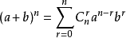
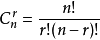
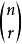
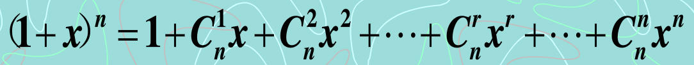
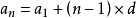
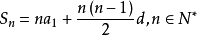
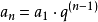
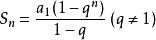

贴图如下：

从n个不同的元素中，取r个不重复的元素，按次序排列，称为从n个中去r个的无重排列。公式如下：
从n个不同的元素中，取r个不重复的元素组成一个子集，而不考虑元素的顺序，称为从n个中取r个的无重组合。公式如下：
二项式定理可以用以下公式表示：
其中，又有等记法，称为二项式系数，
即取的组合数目。此系数亦可表示为杨辉三角形。它们之间是互通的关系。
展开以后，如下：

特殊情况：
当x=1时：
以下为杨辉三角：
1
1 1
1 2 1
1 3 3 1
1 4 6 4 1
1 5 10 10 5 1
1 6 15 20 15 6 1
1 7 21 35 35 21 7 1
1 8 28 56 70 56 28 8 1
1 9 36 84 126 126 84 36 9 1
1 10 45 120 210 252 210 120 45 10 1
1 11 55 165 330 462 462 330 165 55 11 1
1 12 66 220 495 792 924 792 495 220 66 12 1
... Arithmetic Progress(Sequence)
通项公式：
求和公式：
Geometric Progress(Sequence)
通项公式：
求和公式：